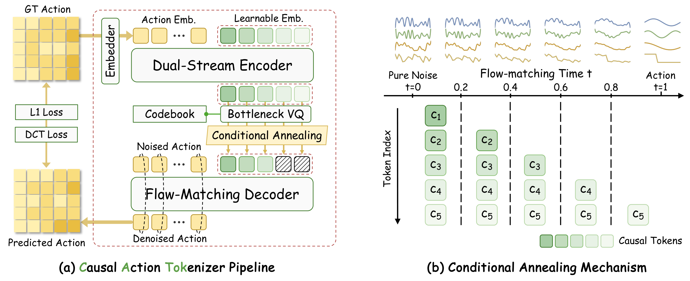
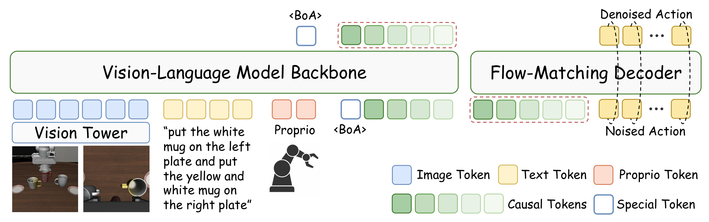

Maps raw action chunks into a compact set of latent query tokens via co-attention with an MMDiT-based transformer.
02
Bottleneck Vector Quantizer
Discretizes latent tokens into a finite codebook using factorized codes.
03
Flow-Matching Decoder
Reconstructs high-fidelity action trajectories with conditional annealing, enforcing a coarse-to-fine causal structure.
The key design is the conditional annealing mechanism: at flow-matching timestep t, the first ⌊tK⌋ token embeddings are progressively masked, forcing each token to specialize in a distinct generative stage—from coarse global guidance at high-noise stages to fine-grained residual corrections as the trajectory matures. This induces a causally ordered hierarchy naturally aligned with autoregressive action generation.

Figure 1 · CATok Pipeline. CATok encodes an action chunk with a Dual-Stream Encoder into latent queries, discretizes them via a Bottleneck VQ, and reconstructs actions using a Flow-Matching Decoder with Conditional Annealing. The annealing schedule assigns each token to a distinct stage of the flow trajectory, establishing a coarse-to-fine causal token space.

Figure 2 · VLA-CATok. VLA-CATok feeds visual, language, and proprioceptive tokens into a VLM backbone to autoregressively predict causal action tokens. A frozen MMDiT flow-matching decoder reconstructs the final continuous action. Discrete tokens serve as the sole interface, naturally insulating the VLM's pretrained knowledge from action-specific gradients.